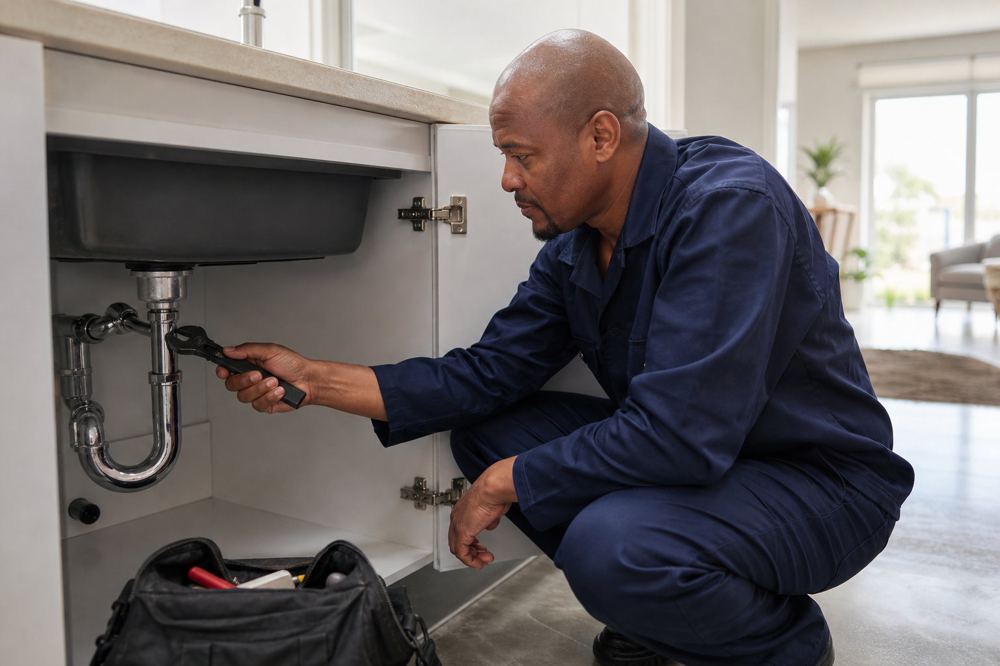

General plumbing repairs
Get help with everyday plumbing problems.
Local plumbing · Lenasia
Your trusted plumbing service partner in Lenasia. Professional plumbing solutions with a commitment to quality and dependable service.

Service enquiries
These are proposed service categories. Please contact us to confirm availability for your job and area.
Get help with everyday plumbing problems.
Ask about drips, leaks and water loss.
Enquire about slow or blocked drains.
Discuss plumbing for bathroom fixtures and upgrades.
Ask about faulty toilets or fitting a replacement.
Enquire about a hot-water issue or geyser work.
Discuss new pipework or upkeep for existing pipes.
Ask about keeping your home plumbing in good order.
Our approach
We focus on understanding the problem, explaining your options clearly and finding a practical solution for your home.
Request a quote
Tell us what’s happening and where you’re based. Call or send a WhatsApp enquiry to discuss the job and request a quote.
About us
Laudable Hiss Plumbing is a local plumbing business based in Lenasia. We welcome enquiries from homeowners in Lenasia and surrounding areas.
Business address
11288 Athimsa Crescent